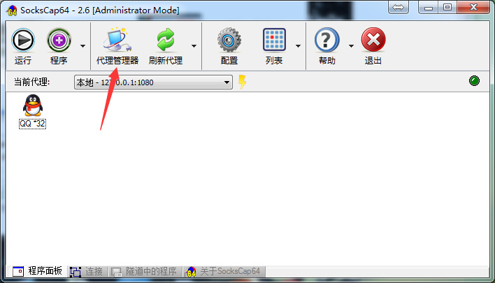
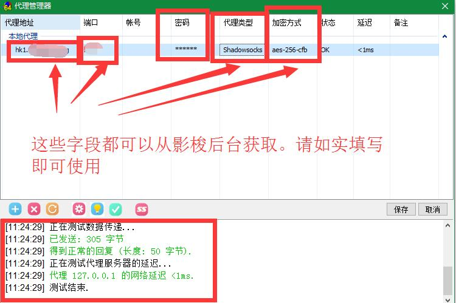
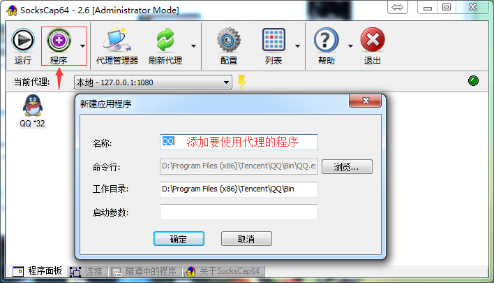
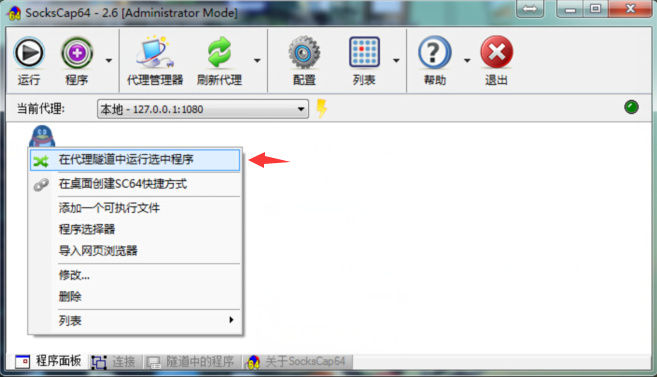

准备事项：
1、首先您需要有一个适合玩游戏的支持UDP转发「影梭」账号，推荐：「mae5互联」 套餐玩游戏稳定快速。
2、Windows版SocksCap64 中文汉化标准版下载（直接安装后即可使用）：官网下载
一、首先要有「影梭」客户端。
购买：
「影梭」 套餐后，按照
「教程」 设置好
二、设置使用SOCKSCAP64代理客户端程序玩游戏。
1、打开SOCKSCAP64代理客户端软件，点击代理管理器。如图：

2、点击+号来添加shadowsocks代理，信息如图所示，代理地址填写后台获取的「服务器节点」，密码填写后台获取的「连接密码」，端口后台获取的「服务器端口」，类型「shadowoskcs」，加密方式「AES-256-CFB」，保存，然后点击开始测试看看是否成功。。如图：

3、点击“程序”菜单，然后选择“添加一个可执行文件”，名称自己起，命令行就是主程序的EXE运行文件了，然后确定。。如图：

4、添加好了，右键点击想要使用代理的程序“在代理隧道中运行选中程序”，OK打开游戏客户端！Go!。。如图：
